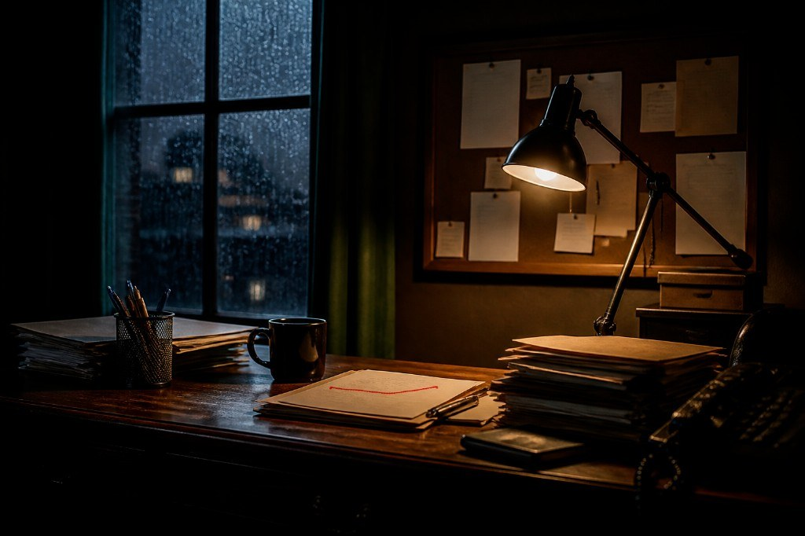

Дело ПП-2024-0624 «Перевал Седой Хребет» · Доступ открыт
Быстрые ссылки
Утром 25 июня работник дорожной службы Дудин, который с бригадой в это время обновлял дорогу около озера, обнаружил тело девушки у перевала Седой Хребет. Сначала было мнение, что она сорвалась с обрыва, т.к. такие инциденты уже были в этом районе, а вечером был дождь, плохая видимость и девушка могла запросто соскользнуть с обрыва. Тем не менее позже была найдена верёвка и проведена СМЭ по заявлению отца погибшей, которая определила, что время смерти девушки было около 23:00 24 июня и смерть была не несчастный случай, а от удушения туристической верёвкой.
Роман Тишин в этот вечер работал на своей ночной рабочей смене в АЗС «Трак». Делал кофе и помогал на заправке. По дороге домой по тропе через оз. Черничное после смены под утро 25 числа он увидел тело девушки и не удержался и взял кошелёк с деньгами. Так он стал подозреваемым в её убийстве. Его мама написала заявление на проведение независимого детективного расследования. Так вы были приглашены в это дело.
Роман Тишин не мог убить Киру, т.к. в момент её смерти в районе 23:00 он работал на АЗС «Трак» и был на кассе, что отражено в онлайн-выписке кассы (с 22:47 до 02:43). В этой выписке также можно увидеть, что машина Артёма Кольцова заправлялась в 22:47 (по номеру А 123 ВС 47). Этот номер машины можно увидеть на доске объявлений в КаменьMail, где Артём выложил объявление о продаже машины.
Переходим к Артёму Кольцову. Как было сказано выше, можно отметить, что он был недалеко от места совершения преступления. В выписке из онлайн-кассы прописан номер его машины, а также следы, похожие на его протекторы резины, были обнаружены утром у места убийства. Они отчётливо отпечатались на влажной от дождя глине. Артём утверждает, что во время смерти Киры он был с Софьей Рыжовой, своей новой подругой, в базе отдыха «Скала». В этой базе Софья Рыжова работает официанткой и имеет доступы к номерам, что не составило бы труда снять любой номер. Софья также подтверждает его алиби, что Артём в эту ночь был с ней.
Тем не менее, более детально изучив сайт базы отдыха «Скала», можно увидеть, что «номер с видом на озеро», о котором говорит Артём, в этот период был на ремонте. Этот факт убирает алиби Артёма.
Продолжаем собирать больше фактов и улик про других подозреваемых. Селезнёв и Орлов — это сотрудники турклуба «Седой Хребет», где Кира работала волонтёром в летний сезон.
Никита Орлов является старшим инструктором клуба. Кира помогала ему водить туристические группы и на складе. Один из таких походов был 17 июня, за неделю до её смерти. Именно после этого похода пропала чёрно-жёлтая туристическая верёвка, принадлежащая Орлову. Эта верёвка была позже обнаружена недалеко от тела девушки, а СМЭ в заключении о смерти указала насильственный характер от удушения этой верёвкой. Таким образом, орудием убийства является верёвка Орлова. В процессе допроса Орлов признаёт её потерю и что в тот вечер он был дома с женой, которая это может подтвердить.
Рассмотрим другого подозреваемого из турклуба. Это бухгалтер Марк Селезнёв, которому Кира также помогала с учётом финансовых документов. На него в личных вещах Киры отцом было найдено не отправленное заявление о мошеннической схеме по распиливанию субсидии. Является ли это мотивом убийства? На допросе Марк также заявляет, что вечером был один дома и никто его не видел.
Изучаем дальше сайт турклуба «Седой Хребет», в котором работают все подозреваемые — Кольцов, Селезнёв и Орлов. На новостной странице можно увидеть email-адрес Селезнёва, куда он просит отправлять квитанции об оплате членских взносов. Также в фотоальбоме есть фотография с празднованием 25-летия Селезнёва. Пароль — дата рождения — подходит к входу в личный кабинет турклуба, где можно увидеть переписку Селезнёва с Кирой, где Кира накатывает на Марка и требует денег за молчание, чтобы не отправлять заявление о мошенничестве. Также из диалога Марка и Никиты Орлова можно понять, что они действительно закупились снаряжением по завышенной цене. Истинную стоимость некоторого снаряжения можно понять из доски объявлений на КаменьMail, где один из туристов его продаёт.
В диалоге Марка и Орлова последний кидает закрытую паролем ссылку на время и место встречи с директором ГорСнаба (магазин снаряжения). Паролем к ссылке является дата основания турклуба — 01.06.2014. Эту дату можно заметить из новостей на КаменьMail. Таким образом, в момент совершения преступления Селезнёв и Орлов были на встрече с директором магазина туристического снаряжения для получения откатных «бонусов» за покупку. Убить Киру они не могли.
Возвращаемся к Кольцову. Он остаётся последним подозреваемым. Есть его переписка с Селезнёвым, где можно посмотреть его почтовый ящик — a.koltsov@kamen.mail. Далее на сайте КаменьMail можно войти в эту почту через процесс восстановления и ввода трёх ответов на вопросы. Любимая марка машины — УАЗ (можно увидеть в объявлении о продаже). Улицу, где он живёт, можно увидеть в документе накладной на доставку кубка от победы на межклубном турнире по скалолазанию из личного кабинета Селезнёва. В ней указана улица Нагорная. Хотя в допросе Кольцов указал ул. Шоссейная. На третий вопрос о любимом спорте ответ — скалолазание. То, чем Кольцов любил заниматься вместе с Кирой.
В почтовом ящике Кольцова мы находим непрочитанное письмо с фото с камер видеонаблюдения, которые поставили недавно у карьера, т.к. там часто превышали скорость. Кольцов после заправки на АЗС «Трак» поехал в другом направлении от оз. Черничное — к карьеру. И в момент смерти был далеко от места происшествия.
Далее на почте мы находим переписку Кольцова и Игоря Владыкина, личного психолога Киры, так можно узнать про его почту. Пароль мы могли отметить на сайте клиники «Горный покой», на который можно перейти с доски объявлений КаменьMail. На сайте клиники на одной из фотографий на компьютере в кабинете Владыкина приклеен стикер с паролем — pokoy47.
В почтовом ящике Владыкина мы видим переписку с Кирой, где она шантажирует его, требуя деньги за то, что она не будет говорить про изнасилование. Также в почтовом ящике есть письмо с ретрита в Турции, где на фотографии Владыкин с красной ниткой на запястье. Эта нитка была найдена в руках жертвы. Помимо этого на почте у него есть фото из автосервиса с изображением протектора резины, который совпадает со следами на парковке у озера. Владыкина можно было отметить также на общем фото в походе 17 июня — именно тогда, когда пропала чёрно-жёлтая туристическая верёвка Орлова.
Вера Самойлова — дочь Степана Дудина: в допросе он говорит, что в разводе и его дочь зовут Вера.
Следователь Морозов А. В. также работает психотерапевтом в частной клинике «Горный покой».
Софья Рыжова живёт вместе с Артёмом Кольцовым — адрес из её допроса Нагорная, 29, как и у Артёма в накладной на кубок.
Все совпадения — чистая случайность. Персонажи и события придуманы.